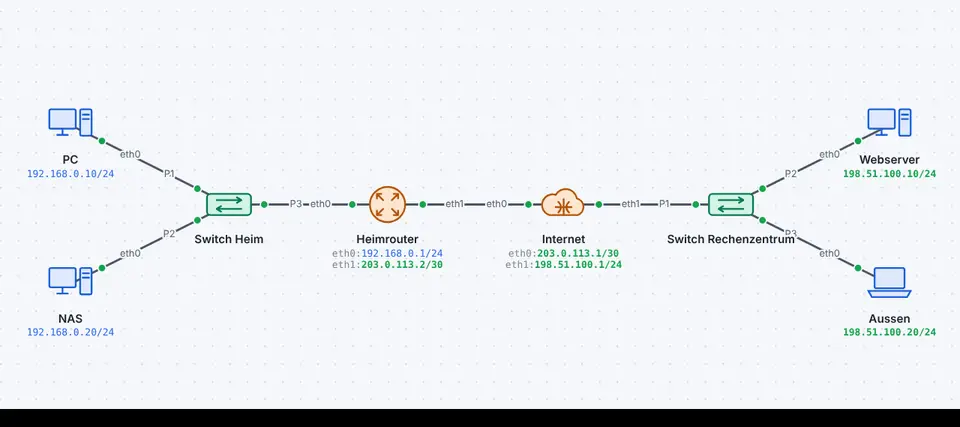
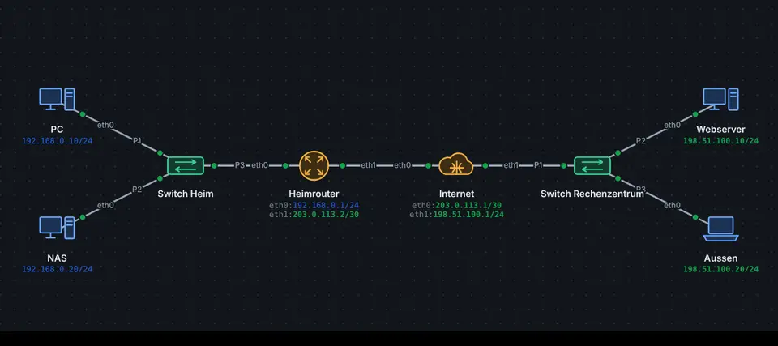

Private Adressen (RFC 1918) dürfen nicht ins Internet; der Provider verwirft sie. Und öffentliche IPv4-Adressen sind knapp: Ein Haushalt oder eine Schule bekommt oft nur eine. NAT (Network Address Translation) am Router ersetzt beim Hinausgehen die private Absenderadresse durch die öffentliche und merkt sich die Zuordnung, damit die Antwort zurückfindet.
PAT: viele Geräte, eine Adresse
Bei PAT (Port Address Translation, auch NAT-Overload) teilen sich alle Geräte die öffentliche Adresse; unterschieden werden sie am Port:
innen
aussen
192.168.1.10:49152
203.0.113.2:1024
192.168.1.11:49152
203.0.113.2:1025
Die NAT-Tabelle (show ip nat translations oder in der Simulation beim Router) zeigt diese Einträge.


Zeitlupe NAT in der Simulation: Der Router ersetzt die private Absenderadresse
Von aussen hinein
Von aussen kann niemand eine Verbindung zu einem privaten Gerät beginnen, die Tabelle kennt den Weg nicht. Dafür gibt es:
Art
Wirkung
Beispiel
Portweiterleitung (DNAT)
Port der öffentlichen Adresse → internes Gerät
TCP 443 → NAS 192.168.1.20
statisches DNAT
eigene öffentliche Adresse → internes Gerät, eingehend
Webserver unter 203.0.113.80
statisches SNAT
internes Gerät geht immer mit fester Adresse hinaus
Mailserver mit fester Absenderadresse
1:1-NAT
beides zusammen
Server in der DMZ
CGNAT
Viele Provider haben selbst zu wenig öffentliche Adressen. Sie geben ihren Kunden Adressen aus 100.64.0.0/10 (RFC 6598) und übersetzen im eigenen Netz ein zweites Mal. Für Portweiterleitungen von aussen ist das ein Problem: Die Kundin besitzt keine öffentliche Adresse mehr. Eine Lösung ist IPv6 oder DS-Lite.
So geht es in leyoNET
Derselbe Text wie in der Hilfe der App (Taste F1).
NAT/PAT
Private Adressen sind im Internet nicht erreichbar. NAT ersetzt deshalb Adressen beim Übergang zwischen innen und aussen. Man unterscheidet zwei Richtungen:
SNAT (Source NAT) ersetzt die Quelladresse ausgehender Pakete. Häufigste Form ist PAT (Masquerading): Alle teilen sich die Router-Adresse und werden über Ports unterschieden. Mit statischem SNAT geht ein Gerät immer mit einer festen öffentlichen Adresse hinaus. Antworten kommen über die gemerkte Verbindung zurück, neue Verbindungen von aussen nicht.
DNAT (Destination NAT) ersetzt die Zieladresse eingehender Pakete: als Port-Weiterleitung (ein Port) oder als statisches DNAT (eine ganze öffentliche Adresse). Die Antworten verlassen den Router wieder mit der öffentlichen Adresse.
1:1-NAT verbindet beides (1:1-NAT (statisches NAT)). Eingestellt wird alles im Reiter NAT der erweiterten Einstellungen; die NAT-Tabelle in der Simulation zeigt die Art jedes Eintrags. Siehe auch Carrier-Grade NAT.
1:1-NAT (statisches NAT)
Ordnet einer inneren Adresse fest eine äussere zu, in beide Richtungen: ausgehend ersetzt der Router die Absenderadresse (SNAT), eingehend die Zieladresse (DNAT). So ist z.B. ein Server unter einer eigenen öffentlichen Adresse erreichbar und geht auch mit ihr hinaus. Der Router beantwortet ARP-Anfragen für die äussere Adresse (Proxy-ARP).
Soll nur eine Richtung gelten, gibt es im Reiter NAT statisches SNAT bzw. statisches DNAT (NAT/PAT).
CLI: ip nat inside source static 192.168.1.10 203.0.113.10 (nur 1:1).
Port-Weiterleitung
Leitet Anfragen an einen Port der öffentlichen Adresse (z.B. TCP 80) an ein Gerät im privaten Netz weiter. So wird ein Webserver hinter NAT von aussen erreichbar. Hinter Carrier-Grade NAT funktioniert das nicht, weil die öffentliche Adresse dem Provider gehört.
Carrier-Grade NAT
Weil IPv4-Adressen knapp sind, geben viele Provider ihren Kunden nur eine Adresse aus 100.64.0.0/10 und übersetzen selbst nochmals ins öffentliche Netz. Der Kunde hat dann doppeltes NAT und kann keine Ports weiterleiten. Einschalten beim Internet-Gerät pro Kundenport.
Beispiel ansehen
NAT und Portweiterleitung
Heimnetz mit privaten Adressen hinter einem Router mit NAT.
Der PC öffnet eine öffentliche Webseite; in der NAT-Tabelle des Routers erscheint die Übersetzung auf die öffentliche Adresse.
Firmennetz mit PAT für alle und statischem SNAT für den Mailserver.
PC 1 erscheint aussen als 203.0.113.2 mit fremdem Port (PAT), der Mailserver immer als 203.0.113.5 (statisches SNAT). Die NAT-Tabelle des Routers zeigt beide Arten.
Interner Webserver unter einer eigenen öffentlichen Adresse, dazu eine Portweiterleitung zum NAS.
«Aussen» ruft 203.0.113.5 auf; der Router ersetzt das Ziel durch 192.168.0.80 und die Antwort geht wieder mit 203.0.113.5 hinaus. Danach http://203.0.113.2:8080/ testen (Portweiterleitung).
«Live ansehen» öffnet das Netz in leyoNET, die Simulation läuft in einer Schleife. In der App findest du es unter Datei → Demo-Netze, mit Führung Schritt für Schritt.
★★★☆☆Das NAS von unterwegs erreichen· 2 Ziele · Arbeitsblatt
★★★★☆Webserver mit eigener öffentlicher Adresse· 2 Ziele · Arbeitsblatt
★★★★☆SNAT: feste Absenderadresse für den Mailserver· 3 Ziele · Arbeitsblatt
★★★★☆DNAT: Webserver unter eigener Adresse· 2 Ziele · Arbeitsblatt
★★★★☆Routing – Auftrag 2: Ins Internet mit NAT· 5 Ziele · Arbeitsblatt
In leyoNET unter Werkzeuge → Aufgaben-Katalog. Jede Übung prüft sich selbst.
Was leyoNET vereinfacht
Protokoll
Schicht
Vereinfachung in der Simulation
NAT: PAT, statisches SNAT, DNAT (Portweiterleitung, statisch), 1:1-NAT, CGNAT
3
Endpunktunabhängige Zuordnung; keine Application Layer Gateways; SNAT und DNAT merken sich Verbindungen für die Antworten
Normen
RFC 3022 – Traditional IP Network Address Translator
RFC 6598 – IANA-Reserved IPv4 Prefix for Shared Address Space
RFC 1918 – Address Allocation for Private Internets
Weiterlesen
Internet (Provider)Steht für den Provider und den Rest des Internets: öffentliche Adressen, Routing zwischen Kunden, DNS, CGNAT und DS-Lite.
Internet-Box (CPE)Das Gerät vom Provider für zu Hause: Modem, Router mit NAT, DHCP-Server und kleiner Switch in einem Gehäuse.
Firewall-Regeln (Paketfilter)Regeln von oben nach unten, Standardregel, zustandsbehaftet oder zustandslos – wie ein Router oder eine Firewall entscheidet, was durch darf.
IPv4Adressen, Masken und der IPv4-Kopf: wie ein Paket sein Ziel über viele Netze hinweg findet, mit TTL, Prüfsumme und privaten Adressen.